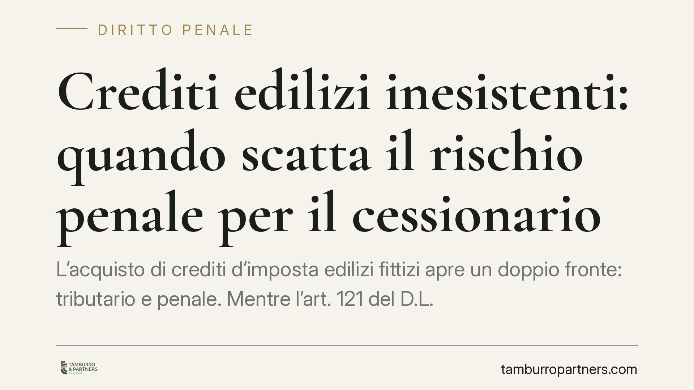

Crediti edilizi inesistenti: quando scatta il rischio penale per il cessionario
L'acquisto di crediti d'imposta edilizi fittizi apre un doppio fronte: tributario e penale. Mentre l'art. 121 del D.L. 34/2020 offre al cessionario in buona fede una tutela sul piano fiscale, la giurisprudenza penale di legittimità valuta in modo autonomo la consapevolezza dell'acquirente. Capire dove finisce la protezione tributaria e dove inizia il rischio penale è oggi essenziale per banche e intermediari.

Il doppio binario: tributario e penale
Chi acquista un credito d'imposta edilizio poi rivelatosi inesistente si muove su due piani che non coincidono.
Sul piano tributario, l'art. 121 del D.L. 34/2020 prevede un cosiddetto *safe harbour*: il cessionario risponde del recupero dell'importo e delle sanzioni solo in caso di dolo o colpa grave. In presenza di documentazione completa e di controlli adeguati, la buona fede lo mette al riparo dall'azione dell'Agenzia delle Entrate.
Sul piano penale il ragionamento è diverso e del tutto indipendente. L'assenza di responsabilità tributaria non esclude automaticamente quella penale, perché i due accertamenti rispondono a logiche e a standard probatori distinti.
Inquadramento normativo
Le fattispecie penali richiamate in questa materia sono principalmente la truffa aggravata per il conseguimento di erogazioni pubbliche (art. 640-bis c.p.), l'indebita percezione di erogazioni a danno dello Stato (art. 316-ter c.p.) e, con riferimento alla fase della compensazione, l'indebita compensazione mediante crediti inesistenti (art. 10-quater del D.Lgs. 74/2000).
Sul punto occorre una precisazione metodologica. La qualificazione della creazione di crediti fittizi in termini di truffa aggravata è frutto di pronunce di sezioni semplici della Cassazione penale (in particolare delle Sezioni II e III), non di una pronuncia delle Sezioni Unite. Si tratta di un orientamento di legittimità significativo, ma non assistito dall'autorevolezza nomofilattica che deriverebbe da una decisione delle Sezioni Unite. È bene tenerne conto nel valutare la stabilità del quadro giurisprudenziale.
Il dolo eventuale applicato a banche e intermediari
Il nodo centrale è la prova dell'elemento soggettivo. La giurisprudenza penale non introduce una presunzione di dolo né un'inversione dell'onere della prova: ciò confliggerebbe con la presunzione di innocenza garantita dall'art. 27 della Costituzione.
Quello che accade è diverso. I giudici valorizzano una serie di *indici fattuali* dai quali desumere il cosiddetto dolo eventuale, cioè la condizione di chi, pur non volendo direttamente l'evento illecito, ne accetta consapevolmente il rischio. Per un intermediario professionale, l'anomalia di un'operazione, la sproporzione tra crediti e cantieri reali, la catena di cessioni opaca o la rapidità sospetta delle transazioni possono costituire elementi indiziari rilevanti.
Non si tratta, quindi, di dover dimostrare la propria innocenza, ma di poter opporre a quegli indici una ricostruzione concreta e documentata della propria diligenza. L'onere resta sull'accusa; sul cessionario grava però, in fatto, un onere di allegazione e controprova tutt'altro che teorico.
Implicazioni pratiche per il cessionario
Per banche e intermediari finanziari il messaggio operativo è chiaro: la diligenza non è un adempimento formale, ma un elemento sostanziale che incide direttamente sulla valutazione dell'elemento soggettivo.
Una *due diligence* apparente — raccolta di moduli senza verifica effettiva della sottostante operazione edilizia — rischia di non offrire alcuna protezione nel giudizio penale. Al contrario, un controllo tracciabile e proporzionato all'anomalia dell'operazione costituisce il principale argomento difensivo.
La catena delle cessioni merita attenzione specifica: più passaggi intermedi si accumulano, più diventa difficile ricostruire la genesi del credito e dimostrare di aver verificato ciò che, in concreto, era verificabile.
Cosa fare in concreto
- Conservate la documentazione completa di ogni operazione: asseverazioni, visti di conformità, stato di avanzamento dei lavori e corrispondenza con il cedente.
- Ricostruite e verificate la catena delle cessioni, individuando l'origine del credito e segnalando internamente i passaggi non trasparenti.
- Strutturate una due diligence proporzionata al rischio, intensificando i controlli di fronte ad anomalie di prezzo, tempistiche o importi.
- Documentate il processo decisionale interno, così da poter dimostrare che la valutazione del rischio è stata effettiva e non meramente formale.
- Considerate che la fase iniziale del procedimento è spesso decisiva ai fini della strategia difensiva, in particolare per la ricostruzione tempestiva degli elementi che escludono la consapevolezza dell'illecito.
Una riflessione finale
La divaricazione tra tutela tributaria e rischio penale impone di ripensare la diligenza come categoria sostanziale. Non conta aver raccolto le carte giuste, ma aver compreso e verificato l'operazione nella sua reale consistenza. È su questo terreno — e non su quello formale — che si gioca oggi la posizione del cessionario.
---
Contributo informativo a cura di Tamburro & Partners. Non costituisce parere legale.
Ogni condominio ha una storia a sé.
Se gestisci un'amministrazione e vuoi un confronto su una specifica questione condominiale, scrivi allo studio. Ti rispondiamo entro un giorno lavorativo.